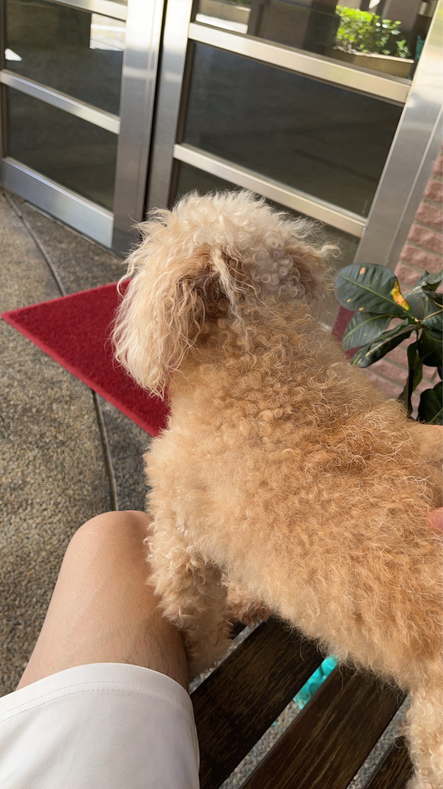
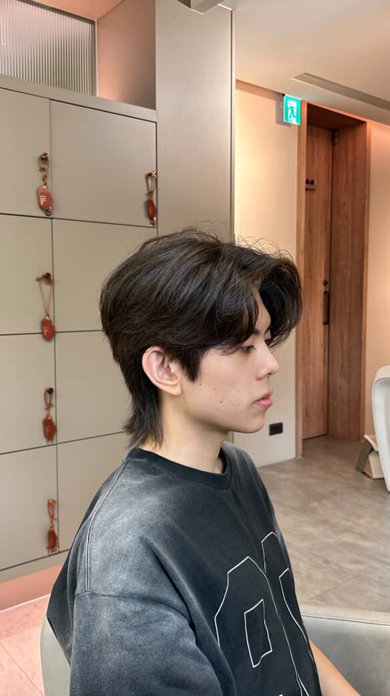

林彥碩
正在載入即時天氣...
關於我
我是林彥碩，就讀於國立臺灣師範大學科技系。個人興趣是在家裡玩遊戲或與偶爾與家人朋友出門踏青或逛街。
我的經歷
- 熟悉高中以下數學，也在高中數學補習班中教學，對有趣的數學充滿興趣。
- 在高中的暑期課程中和組員一起用arduino製作，自動抽衛生紙機器人。
- 在高二時製作關於肥料如何影響植物生長的小論文，也在小論文比賽中得到了甲等。
- 目前在大學認真學習本科系外，也在努力雙主修電機。
我的特色
努力學習不同領域的知識，讓我可以順應這個世代：
個人特質
- 熱情但我很內向，在必要的場合才會拿出我的勇氣聊天。
- 讀書認真，對待自己的課業相當認真。
- 對喜歡的事物會認真專研，也會去找到問題的解答。
- 有團隊能力，在高中做各種報告都是身為組長，帶領組員完成工作。
生活照片
偶爾也會藉由照片記錄生活。

家犬

戶外踏青

生活照

看海
最新科技資訊
即時關注科技趨勢，保持學習熱忱。
正在載入最新科技新聞...
聯絡我
歡迎隨時透過以下方式與我聯繫！
- Email: 413711114h@gapps.ntnu.edu.tw
- LinkedIn: 我的 LinkedIn 個人頁面
- GitHub: LinYenShou 的 GitHub 程式碼庫